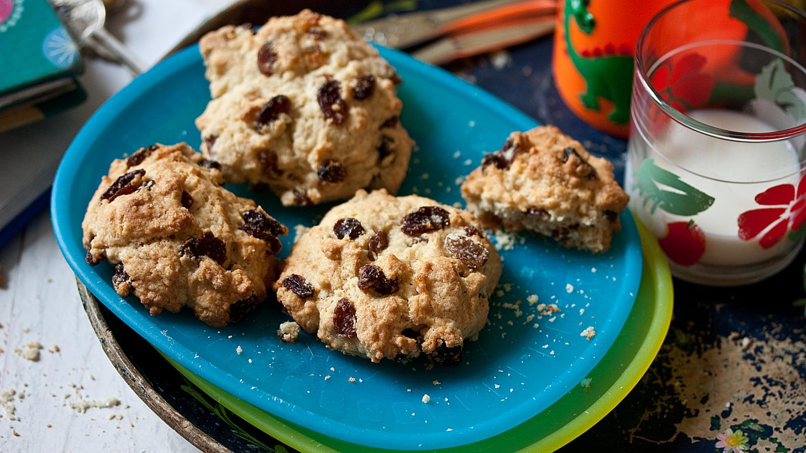

Rock Cakes Recipe

Description
This is a recipe for the traditonal British sweet rock cakes.
They are easy to make and tasty to eat.
This recipe is often done as a family to get children
involed in baking too.
Ingredients
- 225g/8oz self-raising flour
- 75g/ 2 1/2oz caster sugar
- 1 tsp baking powder
- 125g/4 1/2oz unsalted butter, cut into cubes
- 150g/5 1/2oz dried fruit
- 1 free-range egg
- 1 tbsp milk
- 2 tsp vanilla extract
Steps
- Preheat the oven to 180C/160C Fan/Gas 4 and line a baking tray with baking parchment.
- Mix the flour, sugar and baking powder in a bowl and rub in the cubed butter until the mitxure
looks like breadcrumbs, then mix in the dried fruit.
- In a clean bowl, beat the egg and milk together with the vanilla extract.
- Add the egg mixture to the dry ingredients and stir with a spoon until the mixture just comes
together as a thick, lumpy dough. Add a teaspoon more milk if you need it to make the mixture stick together.
- Place golfball-sized spoons of the mixture onto the prepared baking tray. Leave space between
them as they will flatten and spread out to double their size during baking.
- Bake for 15–20 minutes, until golden-brown. Allow to cool for a couple of minutes, then turn them out onto a wire rack to cool.